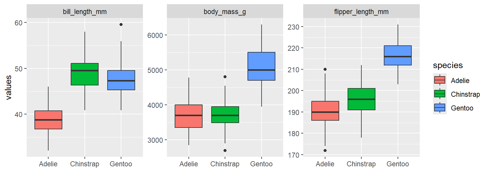
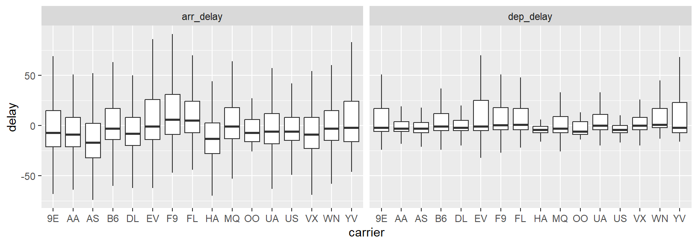
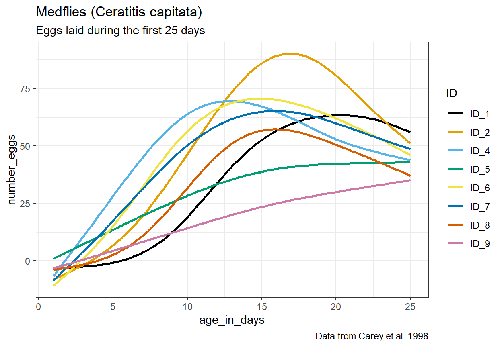
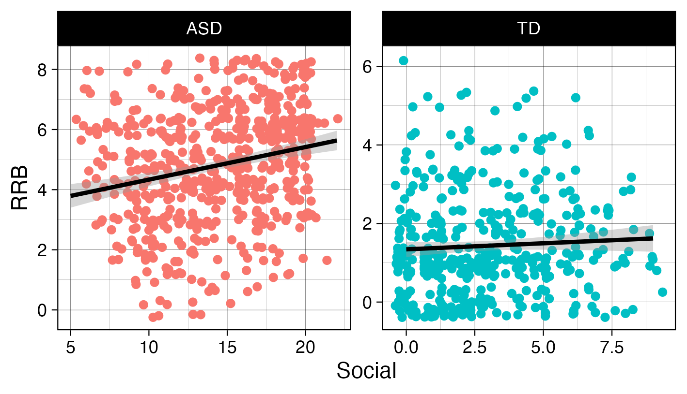

library(tidyverse)
library(palmerpenguins)
penguins |>
pivot_longer(cols = c(_____, _____, _____),
names_to = _____,
values_to = _____) |>
ggplot(aes(y = _____,
x = _____,
fill = _____)) +
geom_boxplot() +
facet_wrap(~_____, scale = _____) +
labs(x = _____)Session 3: Data tidying and import
The next two weeks (no meetings next week since it is Thanksgiving week), we will focus on two key foundations from R for Data Science: tidying data and importing it into R. We begin with data tidying from Chapter 5, where you will learn the principles of tidy data — each variable in its own column, each observation in its own row — and practice reshaping datasets using tools like pivot_longer() and pivot_wider(). We then move to data import from Chapter 7, exploring the readr package and its fast, predictable functions for reading common file formats, specifying column types, and handling irregularities in raw data. Together, these chapters build your ability to bring data into R and prepare it for effective analysis.
One difference this time is that we will not go through the exercises in the book. The chapters we will read include few exercises, and it is important that you practice data tidying and data import in ways that reflect real-world situations you may encounter when working with data at Marcus and in other scenarios. Therefore, we have prepared custom exercises, which you will find at the bottom of this page.
The following order of activities is recommended:
Step 1: Book chapter reading. Read both chapter 5 and chapter 7 in the R for Data Science book. Skip the exercises entirely.
Step 2: Interactive tutorials. Go through the r4ds.tutorials: 05-data-tidying and r4ds.tutorials: 07-data-import tutorials.
Step 3: Complete exercises. There are eight exercises further down on this webpage. Please complete these exercises instead of the ones in the book.
Step 3.5: One-on-one meetings. We will not meet during Thanksgiving week, but please schedule a meeting with Hasse for Monday, December 1. If there are things you would like to discuss before then, feel free to schedule a meeting at any time.
Step 4: Send Answers. Send Hasse both HTML files (2) containing the tutorial exercise answers, as well as the R script file with the website exercise answers, via Slack no later than the end of the day on Tuesday, December 2.
Step 5: Wednesday group discussion.
EXERCISES
- Copy the code in the code chunk below and fill in the blanks so that it generates the plot below this chunk. Explain why we need to use
pivot_longer()in this case (Hint: think about howfacet_wrap()works and this visualization might help you understand the mechanics ofpivot_longer()better). What does thescaleargument infacet_wrap()do? How can you uselabs()to remove a specific label (x-axis for example)?

- Based on the same logic as in Exercise 1, recreate the code to generate the plot below (using the
flightsdata from thenycflights13package). How can you tellgeom_boxplot()to remove outliers? What conclusions can you draw from the plot?

- Copy the code in the chunk below and run it in RStudio to generate the
ex3object. Then usepivot_wider()andwrite_csv()to write a file that looks likeoutput1.csv(shared on Slack).
ex3 <- tibble(column = rep(c("x", "y", "z"), each = 10),
values = c(4.2, 5.1, 7.1, 2.1, 7.2, 8.1, 2.2, 8.2, 9.1, 10,
7.3, 7.4, 8.3, 9.2, 2.3, 1.2, 8.5, 9.4, 12.4, 1.5,
8.9, 2.7, 1.4, 7.7, 3.4, 8.7, 9.5, 0.8, 2.9, 9.9),
ID = rep(paste0("ID_", 1:10), 3))- Next, we will practice importing some data. This exercise makes use of the
example1.csvfile sent to you on slack. It is recommended that you first take a look at the file (in the TextEdit app for example) before attempting to read it in, in order to identify things such as how columns are separated and how missing values are coded. Fill in the blanks in the code so that the output ends up looking identical to the tibble shown in next code chunk. Note that you may have to install thejanitorpackage first. What does the::notation afterjanitorindicate?
example_1 <- read_csv(_____, skip = __, na = _____)
example_1 |>
janitor::_____ |>
mutate(measure_1 = parse_number(_____),
age = parse_number(if_else(age == _____, _____, _____)))# A tibble: 10 × 4
participant_id measure_1 measure_2 age
<chr> <dbl> <dbl> <dbl>
1 id1 3 2 6
2 id2 3 4 17
3 id3 4 3 11
4 id4 4 2 24
5 id5 NA 5 18
6 id6 2 4 8
7 id7 2 2 9
8 id8 2 2 17
9 id9 2 NA 13
10 id10 3 5 15- We will continue with
example2.csv. Now it is your job to figure out how this file should be read and if any data transformation is necessary. Carefully study the file and look for ways to determine the correctread_*()function, meta-data lines, data entry inconsistencies and missing values. After reading in and transforming the data, make the plot below. The same color scale as in the very first example in chapter 1 of R for Data Science is used here. Read this article about how to change the theme (for example the default grey background). What should themethodargument ingeom_smooth()be set to for the curves to look like in the plot? Can you spot any issues with the way the curves fit the data, considering the y-axis represents the number of eggs?

For the next exercises, you will work with real data from Marcus (sent via Slack). These exercises use two datasets from clinical researchers studying the Autism Diagnostic Observation Scale (ADOS). Your task is to help these researchers tidy and manipulate their data so that visualizing it and creating summaries becomes a straightforward process.
First, we have the
ADOS1.xlsxdataset. The researcher responsible for this data collection was interested in participants’ scores on the Social Affect subscale and how they vary over time. One new column was added for each participant assessed, reflecting all ages at which participants came to the clinic, inputting their Social Affect score on the row corresponding with their age at that clinic visit (we know, not a great way to input data!). As you will see, this dataset contains many missing values, as it would be quite unrealistic for all participants to visit at all ages.Note that the data is stored in an Excel file. To be able to import the file, first load the
readxlpackage (already installed with the tidyverse collection of packages), then use theread_xlsx()function. Continue with one of thepivot_*()functions to properly format the ADOS1 dataset so you are able to calculate the average number of visits across all participants. To do this, we want you to use thecount(), andsummarize()functions. How many participants visited the clinic two or more times?Next, we have
ADOS2.xlsx, created by a researcher who only recorded data from a single visit for each participant. This single visit, however, is reflected across two different rows, as a new row was created when scoring each subscale.Import the data correctly (how are NAs coded for example?) and use one of the
pivot_*()functions to properly format the ADOS2 dataset so you are able to recreate the plot below. Take a look at the x- and y-axis labels for a hint as to the variables you may need to create. Read about how to jitter points here.

- Here you will get to practice creating a summary table from a dataset that closely mimics real world First Focus data, stored in the
advanced_pivot.csvfile. The data entry process produced a dataset where each row represents a participant (identified in thePIDcolumn), and each subsequent column contains assessments of communication (Com), gross motor (GM), and fine motor (FM) skills at 6, 12, and 18 months. As you will see, the assessment type and age are both stored in the column names, making this a pivot problem very similar to example 5.3.4 in R for Data science. First read in the data, then use a combination ofpivot_longer(),pivot_longer()(yes, you will need to pivot twice),group_by()andsummarize()(and perhaps another function or two to get everything just right) to generate this output:
# A tibble: 9 × 3
age measure mean_values
<int> <chr> <dbl>
1 6 Com 37.2
2 6 FM 19.3
3 6 GM 33.3
4 12 Com 44.8
5 12 FM 32.0
6 12 GM 41.6
7 18 Com 41.2
8 18 FM 28.5
9 18 GM 44.8